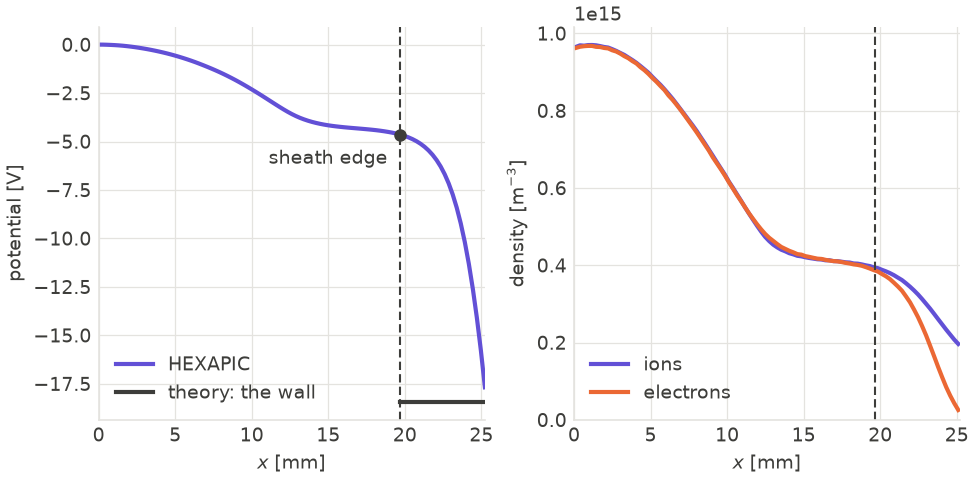

Floating wall#
A wall that is not connected to anything collects the electrons and ions that reach it. The electrons are faster, so the wall charges negatively until it repels most of them, and the two fluxes are equal. The potential then drops by a few \(T_e/e\) over a thin layer in front of the wall, the sheath, in which the plasma is not neutral. The case tests the floating wall, the volumetric source and the heating, and it compares the sheath with the standard formula.
Setup#
Domain |
\(L = 25.2\) mm along \(x\), 2.1 mm along \(y\) (periodic) |
Grid |
96 × 8 cells of 0.263 mm, half a Debye length at \(10^{15}\ \mathrm{m^{-3}}\) and 5 eV; the problem is 1-D along \(x\) |
Walls |
reflective at \(x = 0\) (the plane of symmetry of the plasma), floating at \(x = L\) |
Plasma |
electrons and H⁺ with the real mass ratio; at the start \(10^{15}\ \mathrm{m^{-3}}\), 1000 macro-particles per cell and species, the electrons on the ions’ positions |
Source |
electron–ion pairs in \(0 < x < L/2\) at a mean rate of \(8.7\times10^{20}\ \mathrm{m^{-3}\,s^{-1}}\), falling as \(\cos(\pi x / L)\) to zero at \(L/2\); electrons at 5 eV, ions at 0.5 eV |
Heating |
in \(0 < x < L/2\) a tenth of the electrons is drawn anew from a Maxwellian of \(T_e = 5\) eV every step ( |
Collisions |
none; between \(L/2\) and the wall there is neither a source nor heating |
Time step |
\(1.12\times10^{-10}\) s (\(\omega_{pe}\,\Delta t = 0.2\) at \(10^{15}\ \mathrm{m^{-3}}\)) |
Run |
133 900 steps: 13 times \(L/c_s\), the time of an ion at the sound speed across the domain (1.15 µs); output every 206 steps over the last 6, no charge smoothing |
Field solver |
GMGa3, the 2-D multigrid |
Cost |
about 150 s on one NVIDIA A100 |
The heating is needed. Only electrons with enough energy along \(x\) reach the wall, and without collisions nothing replaces them: the heating in the source region keeps the electrons Maxwellian there.
Running#
python examples/walls/floating_wall/case.py runs/floating_wall
build/HEXAPIC runs/floating_wall/case.toml > runs/floating_wall/run.log
python examples/walls/floating_wall/analyze.py runs/floating_wall
case.py writes runs/floating_wall/case.toml; with --run it also runs
build/HEXAPIC on it (--hexapic names another binary). case.toml beside
the script is the same case. analyze.py reads the profiles along \(x\) that
the run writes at every output step (xprof_<step>.0) and the log of the
run, run.log: its [WallFlux] lines have the numbers of ions and
electrons that the wall absorbed. It prints the numbers below and writes
results.json and the figure into the run’s directory. --live makes
case.py write the frames that HEXAPIC / VIZ shows during the run.
Results#
The numbers are means over the last six transit times, over which the number of particles changes by 0.3 %. The scatter is the standard deviation of six values, one from the mean profiles of each transit time.
The sheath edge \(x_s\) is defined here as the point where the charge separation \((n_i - n_e)/n_i\), followed from the wall into the plasma, falls to 2 %. The electron temperature \(T_e\) at the edge is the mean of the temperatures of the three directions. The ion temperature \(T_i\) is that along \(x\), and \(u_i\) is the mean velocity of the ions.

Left: the potential, with the plasma at \(x = 0\) as zero, the sheath edge, and the wall’s potential that the formula gives from the sheath edge. Right: the densities of the ions and the electrons.
HEXAPIC |
|
|---|---|
Sheath edge, distance from the wall [mm] |
\(5.5 \pm 0.2\) |
\(T_e\) at the edge [eV] |
\(4.88 \pm 0.01\) |
\(T_i\) at the edge [eV] |
\(0.111 \pm 0.002\) |
Density at the edge, of that at \(x = 0\) |
0.41 |
Drop from \(x = 0\) to the wall [V] |
\(17.69 \pm 0.05\), which is \(3.54\,T_e/e\) |
Net current into the wall, of the ion current |
\(3\times10^{-5}\) |
The wall absorbed 2 309 575 macro-ions and 2 309 497 macro-electrons over the six transit times: its net current is zero within \(10^{-4}\) of the ion current.
Sheath drop against theory#
Maxwellian electrons of the temperature \(T_e\) reach a wall that is \(\Delta\phi\) below the sheath edge with the flux \(n_s \sqrt{T_e / 2\pi m_e}\,\exp(-e\Delta\phi/T_e)\), where \(n_s\) is the density at the edge. Ions that enter the sheath at the sound speed \(c_s = \sqrt{(T_e + T_i)/m_i}\) carry the flux \(n_s c_s\). The two fluxes are equal for
\(\Delta\phi\) [V] |
\(e\,\Delta\phi / T_e\) |
|
|---|---|---|
HEXAPIC |
\(13.04 \pm 0.05\) |
\(2.67 \pm 0.01\) |
Formula, with the measured \(T_e\) and \(T_i\) |
\(13.80 \pm 0.03\) |
2.83 |
The measured drop is 5.5 % below the formula. The formula assumes that the ions enter exactly at the sound speed. Here they are 27 % faster (next section), and their flux is larger by this factor: the same balance then gives a drop that is smaller by \(T_e \ln(u_i/c_s)\), 12.63 V, and the measured drop is 3 % above it. The theory does not support a closer comparison than 10 % to 20 %: the edge of the sheath is not sharp, and the electrons at the edge are not Maxwellian, because those that would return from the wall with a high energy are missing. Their temperature along \(x\) is 4.68 eV there.
The result depends on the definition of the edge:
Edge where \((n_i - n_e)/n_i\) is |
1 % |
2 % |
5 % |
|---|---|---|---|
Distance from the wall [mm] |
6.3 |
5.5 |
4.4 |
\(\Delta\phi\), HEXAPIC [V] |
13.18 |
13.04 |
12.66 |
\(\Delta\phi\), formula [V] |
13.82 |
13.80 |
13.80 |
\(u_i / c_s\) |
1.25 |
1.27 |
1.34 |
The drop between the plasma at \(x = 0\) and the sheath edge, 4.6 V, is the presheath. It depends on the source and is not compared with a theory here.
Ion speed against the Bohm criterion#
A sheath in front of a negative wall exists only if the ions enter it at least at the sound speed (Bohm’s criterion),
At the sheath edge |
|
|---|---|
HEXAPIC, \(u_i\) [km/s] |
\(27.8 \pm 0.1\) |
Sound speed \(c_s\), with the measured \(T_e\) and \(T_i\) [km/s] |
\(21.87 \pm 0.02\) |
\(u_i / c_s\) |
\(1.27 \pm 0.01\) |
The ions pass the sound speed at the end of the source region and reach the sheath edge at \(1.27\,c_s\). The criterion is met, but not with the equality that the formula for the drop assumes.
Files#
|
the case as a PICMI script |
|
the case as |
|
the sheath edge, the drops and the ion speed, from a run |
|
the figure above, as |
|
the sources of the theory |
The script#
case.py
#!/usr/bin/env python3
"""floating_wall: a hydrogen plasma in front of a floating wall.
python case.py DIR # DIR/case.toml
python case.py DIR --run # and HEXAPIC on it (build/HEXAPIC; --hexapic: another), into DIR/output
python case.py # the case.toml beside this script
A reflective wall at x = 0 (the plasma's plane of symmetry) and a floating
wall at x = L; y is periodic (the problem is 1-D along x). A source creates
electron-ion pairs in 0 < x < L_S, at a rate that falls as a cosine to zero
at L_S, and the electrons there are kept at T_E (a share of them is drawn
anew from a Maxwellian every step). The rest of the domain has neither a
source nor collisions. The wall charges until it collects as many electrons
as ions; the sheath in front of it holds the potential drop (analyze.py).
--live writes the frames HEXAPIC / VIZ shows during the run.
"""
import argparse
import math
from pathlib import Path
from hexapic import picmi
ap = argparse.ArgumentParser(description="the floating wall: case.toml")
ap.add_argument("dir", nargs="?", type=Path)
ap.add_argument("--live", action="store_true")
ap.add_argument("--run", action="store_true")
ap.add_argument("--hexapic", type=Path, help="the binary --run runs (default build/HEXAPIC)")
args = ap.parse_args()
HERE = Path(__file__).resolve().parent
N0 = 1e15 # the density the grid and the time step are made for [m^-3]
T_E = 5.0 # the electrons' temperature [eV]
T_I = 0.5 # the temperature of the ions the source creates [eV]
SOURCE = 24 # the source region's length in Debye lengths
GAP = 24 # the length without a source, up to the wall, in Debye lengths
CELLS = 2 # cells per Debye length
NY = 8 # the cells across
PPC = 1000 # macro-particles per cell and species at the start
RESAMPLE = 0.1 # the share of the source region's electrons drawn anew every step
TRANSITS = 13 # the run's length in ion transit times L / c_s
MEASURED = 6 # the last transit times, with output
OUTPUTS = 50 # outputs per transit time
c = picmi.constants
m_i = picmi.particle_mass_charge("H", 1)[0]
debye = math.sqrt(c.ep0 * T_E / (N0 * c.q_e))
w_pe = math.sqrt(N0 * c.q_e ** 2 / (c.ep0 * c.m_e))
c_s = math.sqrt(c.q_e * T_E / m_i) # the ion sound speed of cold ions
dx = debye / CELLS
nx = (SOURCE + GAP) * CELLS
lx, ly, ls = nx * dx, NY * dx, SOURCE * CELLS * dx
dt = 0.2 / w_pe
every = round(lx / c_s / dt / OUTPUTS)
steps = every * OUTPUTS * TRANSITS
rate = 0.5 * N0 * c_s / ls # the mean over the source region: the wall's flux is that of N0 / 2 at c_s
grid = picmi.Cartesian2DGrid(number_of_cells=[nx, NY], lower_bound=[0.0, 0.0], upper_bound=[lx, ly],
lower_boundary_conditions=[None, "periodic"],
upper_boundary_conditions=[None, "periodic"])
sim = picmi.Simulation(solver=picmi.ElectrostaticSolver(grid=grid), time_step_size=dt, max_steps=steps,
hexapic_run={"init": "local"}, # same_positions_as needs it
hexapic_output={"from": every * OUTPUTS * (TRANSITS - MEASURED), "wall_flux": True,
"x_profiles": True, "x_profile_temperatures": True,
"phase_space": False} | ({"live": True} if args.live else {}),
hexapic_smoothing={"x_passes": 0, "y_passes": 0}, # a measurement: no charge smoothing
hexapic_title="floating_wall",
hexapic_description="A hydrogen plasma with a source in front of a floating wall: the sheath.")
sim.add_boundary(picmi.Boundary(type="reflective", location="x_lo")) # the plane of symmetry
sim.add_boundary(picmi.Boundary(type="floating", location="x_hi", name="wall"))
layout = picmi.PseudoRandomLayout(n_macroparticles_per_cell=PPC)
box = {"lower_bound": [0.0, 0.0, None], "upper_bound": [lx, ly, None]}
source = {"lower": [0.0, 0.0], "upper": [ls, ly]}
ions = picmi.Species(name="ions", particle_type="H", charge_state=1,
initial_distribution=picmi.UniformDistribution(density=N0, hexapic_temperature_eV=T_I, **box))
electrons = picmi.Species(name="electrons", particle_type="electron",
initial_distribution=picmi.UniformDistribution(density=N0, hexapic_temperature_eV=T_E,
hexapic_same_positions_as="ions", **box))
sim.add_species(ions, layout)
sim.add_species(electrons, layout)
# pairs: each electron is created on its ion
sim.add_source(picmi.Source(species="ions", rate=rate, region=source, temperature_eV=T_I, shape="cosine"))
sim.add_source(picmi.Source(species="electrons", rate=rate, region=source, temperature_eV=T_E, shape="cosine",
same_positions_as="ions"))
sim.add_heating(picmi.Heating(species="electrons", model="resample", region=source, temperature_eV=T_E,
probability=RESAMPLE))
sim.add_diagnostic(picmi.FieldDiagnostic(grid=grid, period=every))
if args.run and args.dir is None:
ap.error("--run needs a directory for the run")
print(sim.write_input_file((args.dir or HERE) / "case.toml"))
if args.run:
sim.run(**({} if args.hexapic is None else {"hexapic": args.hexapic.resolve()}))
References#
The potential drop of a planar collisionless sheath in front of a floating
wall and the condition on the ions’ speed at the sheath edge (Bohm’s
criterion): Riemann [1991] and Stangeby [2000]. The
formula of the README follows from the equality of the electrons’ and the
ions’ fluxes into the wall; analyze.py gives the derivation in its
docstring.
The case takes no numbers from these sources, and it has no data from other codes. The drop between the source region and the sheath edge (the presheath) depends on the source and is not compared with a theory here.